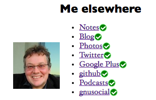
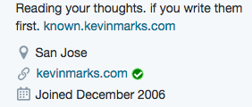
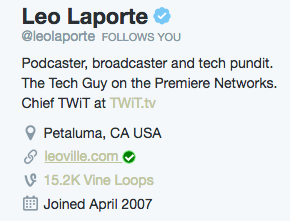
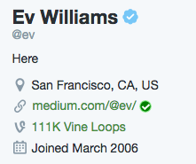

Distributed Verification
There's been a lot of talk about verification recently, with Twitter making their process more widely available, and Jason calling for Twitter to verify everyone. However it's not exactly clear what is meant by verification, and how it has been done.
As currently codified, it is a centralized process, with Twitter, Facebook and Google all having their own methods. So I thought about how we could make distributed verification badges.
Now, we already have the rel="me" standard for linking between different sites to show that you own them both. Its been around for 13 years, and is widely adopted. How about we make it into a badge?
So that's what I did. The site indiewebify.me already had a rel="me" checker, so I wired that up into a bit of client-side javascript that looks for rel="me" links in the page, then asks indiewebify.me if they link back.
 
You can see there that Flickr, Twitter, Google+, Github, Huffduffer and GnuSocial all support rel="me" links natively. Facebook used to, but they got javascripted away.
Then, I put it into a Chrome browser extension, so as you go around the web, it will show you if the rel="me" links you see are actually bidirectional, giving a green tick badge like this if they are and a red cross badge like this if they aren't.  
Now as I browse the web, I can see if people's links are mutual - it has helped me fix the links on my own sites already.
Try it out, see what you think.